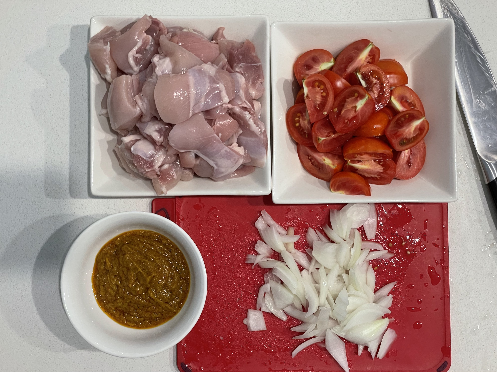
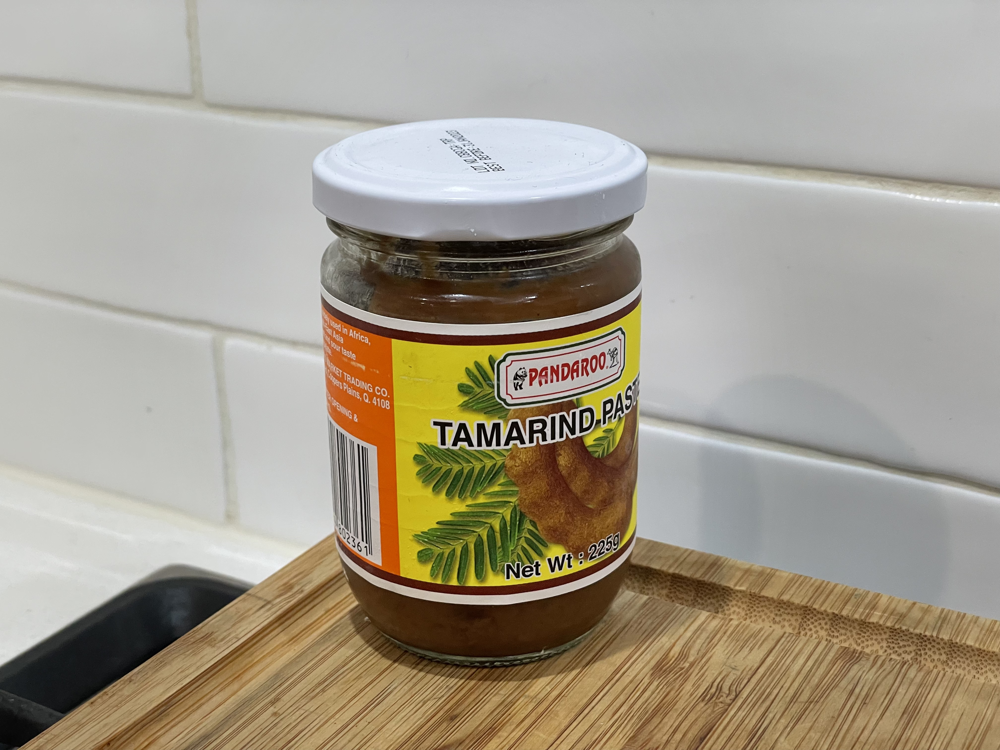
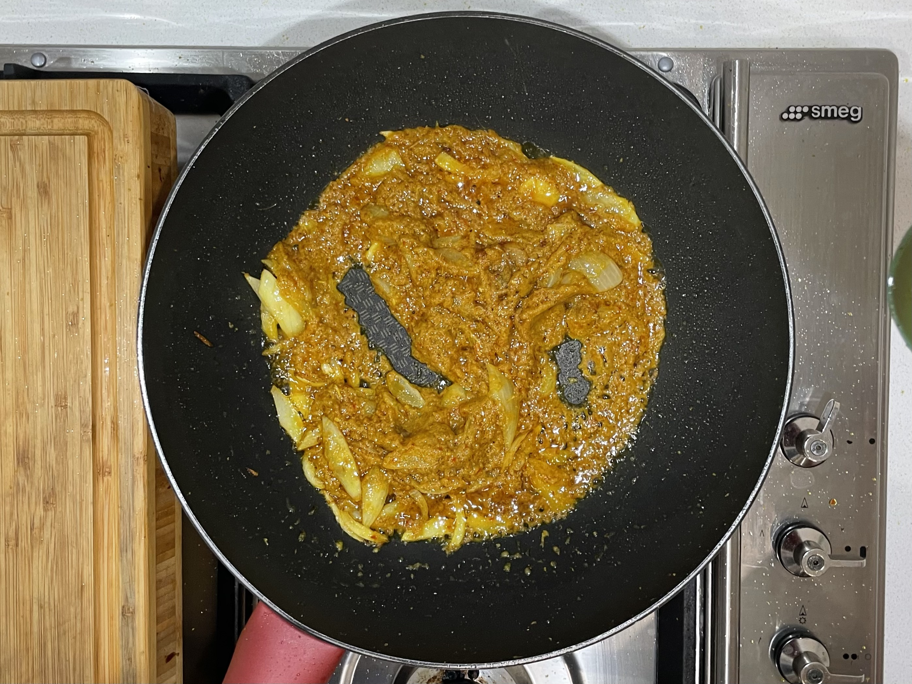
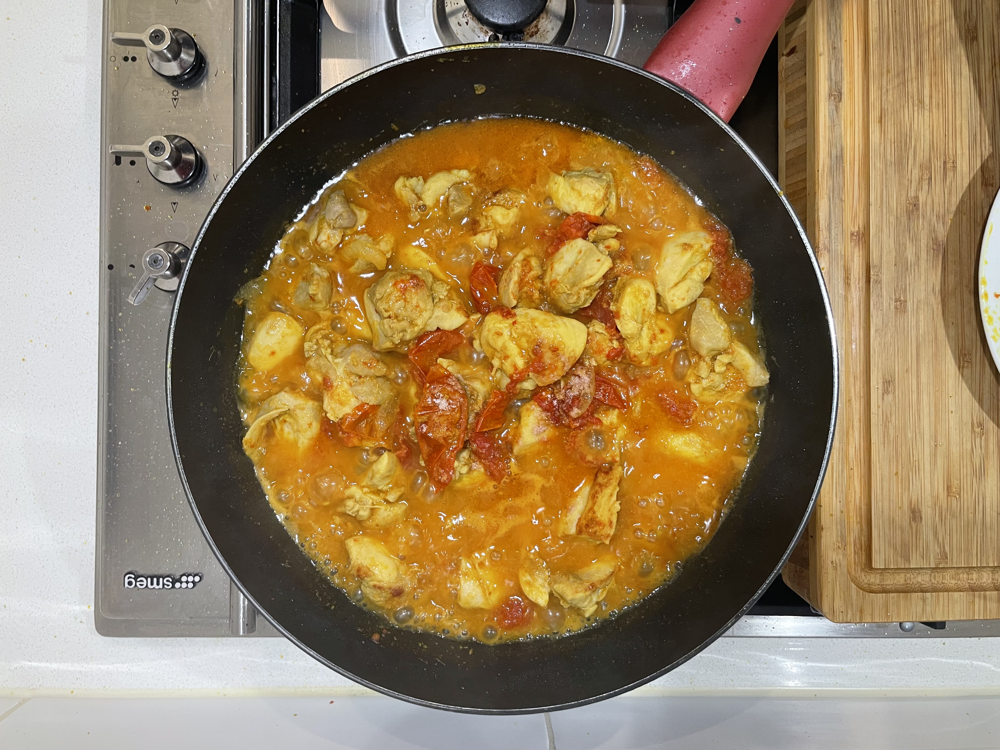

Assam chicken
- Date
- Source Ah Tai

The rempah ingredients are from Ah Tai’s notes. Can also use this recipe.
Ingredients
- ~150 g rempah
- Belacan
- Chilli
- Onions
- Lemongrass
- Galangal
- Turmeric
- 1kg chicken thigh, cut in large pieces
- Tomatoes, cut in wedges
- 1 onion, coarsely chopped
- Tamarind paste, diluted with water
- Sugar
- Mint leaves/laksa leaves (optional)
 
Method
- Use pre-made rempah, or grind rempah ingredients and fry in lots of oil until fragrant. Set aside.
- Fry onions in oil until caramelised well. Then add rempah and fry for a few more minutes. 
- Add chicken, stir well and cover. Cook for a few minutes until the outside of the chicken has browned.

- Add tomato, stir well and cover. Cook for around 20 minutes, stirring occasionally. The tomato should be completely broken up.

- Adjust taste with tamarind water, salt and sugar. 